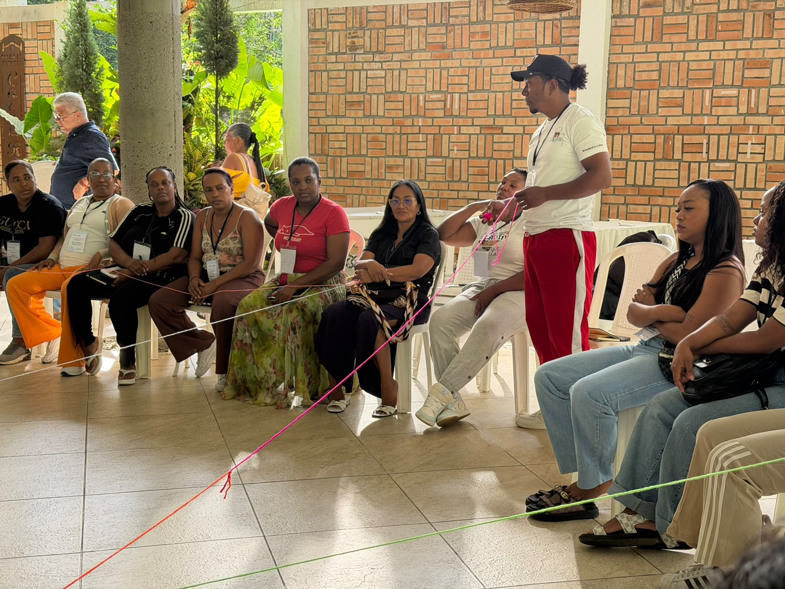
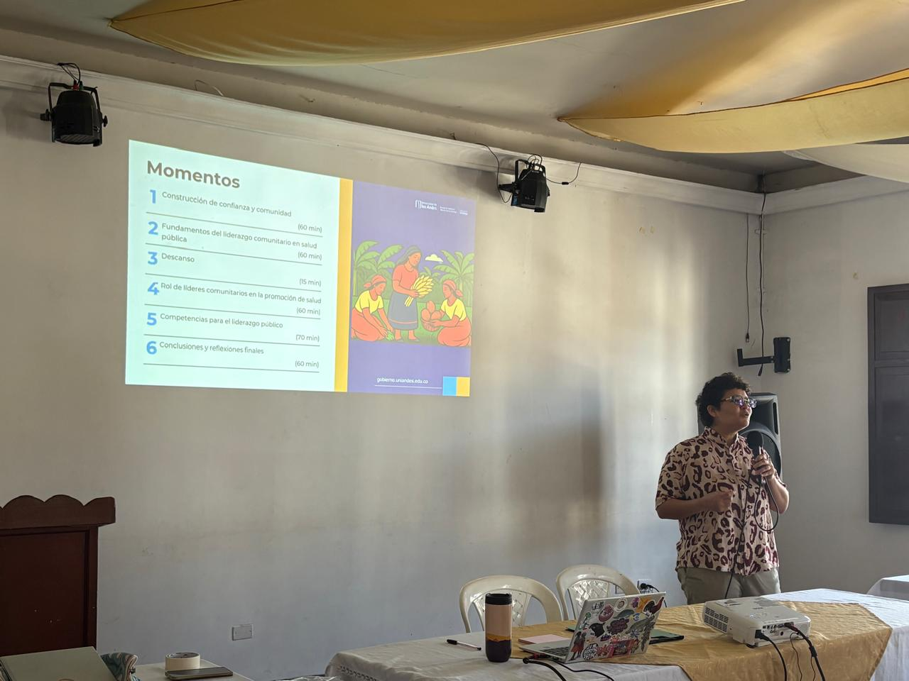
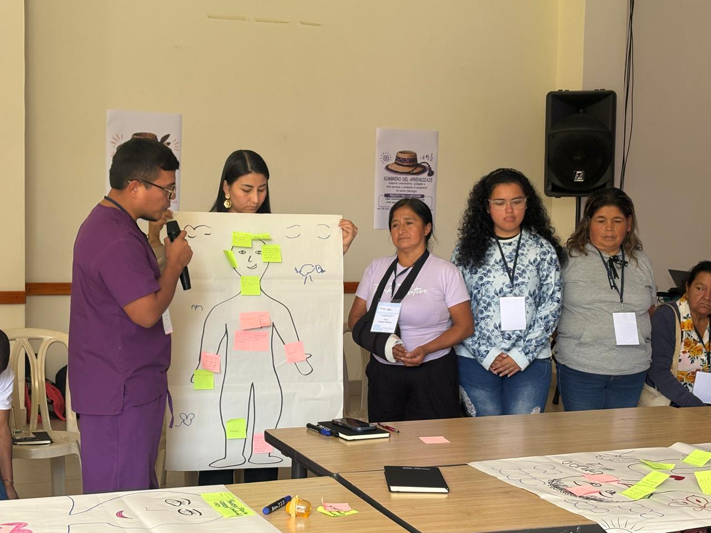

Presentaciones
Material utilizado durante las sesiones de capacitación
LIDERAZGO · SALUD PÚBLICA · SOSTENIBILIDAD
Capacidades para el desarrollo de procesos comunitarios, cohesión social y diseño de iniciativas para la salud pública.
Líderes y lideresas
Sesiones
Municipios

La Secretaría de Salud del Departamento del Cauca, Empresa Social del Estado (E.S.E.) Norte 3, Quilisalud Empresa Social del Estado (E.S.E.), en articulación con la Universidad de los Andes, implementan el Curso en el departmento del Cauca.
Entre agosto y septiembre de 2026, se desarrollarán sesiones de capacitación para 300 líderes y lideresas del departamento del Cauca.
En este sitio podrá consultar y descargar los recursos pedagógicos del curso.
Fundamentos del liderazgo comunitario en salud pública
Trabajo colaborativo y construcción de redes comunitarias
Comunicación estratégica para la promoción de la salud
Gestión comunitaria y participación ciudadana en salud
Incidencia y sostenibilidad de procesos comunitarios en salud

Material utilizado durante las sesiones de capacitación

Documentos sugeridos para profundizar conocimientos

Activiades para afianzar competencias y capacidades
Puedes escribirnos o contactarnos por correo electrónico o WhatsApp.
Visit GitHub Organization